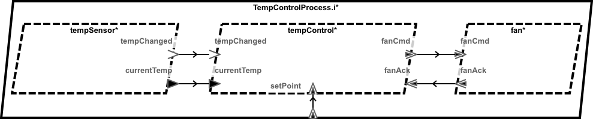
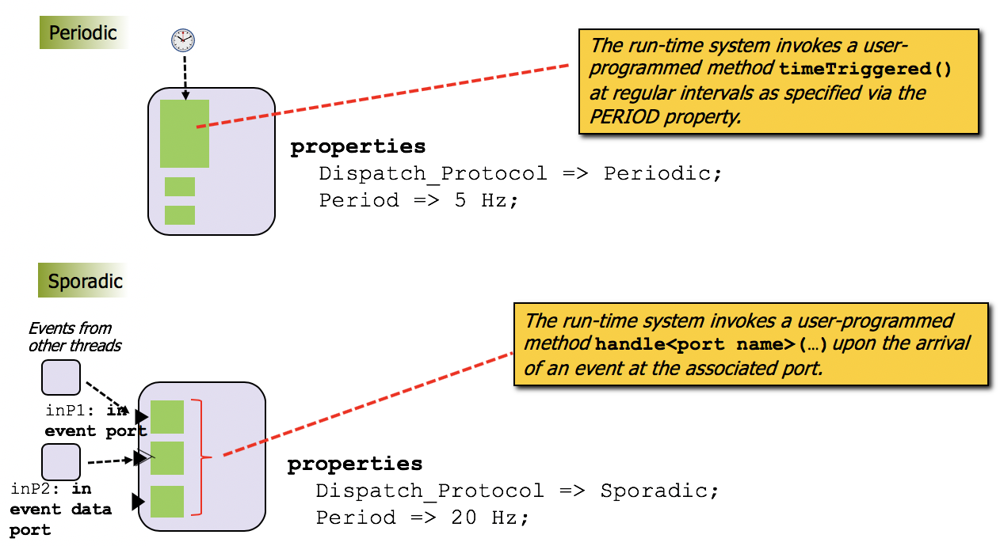

The AADL standard describes both the syntax and semantics of AADL models.
The semantic aspects of AADL can be understood as a computational paradgim – a constrained way of organizing processes, threads, and communication – that matches the domain properties of real-time embedded systems.
The goal of this chapter is to provide a high-level description of
basic aspects of the AADL computational paradigm,
how HAMR generates infrastructure code that implements the paradigm,
how HAMR generates code skeletons and APIs to help developers write code that conforms to the paradgim,
how developers use the HAMR generated infrastructure and APIs to develop components and systems.
These concepts will be illustrated using Slang and the associated Slang/JVM-based reference implementation of the AADL run-time (because the presentation is cleaner in Slang than in C). Details for HAMR development with Slang are found in XXXX, and details for development in C are found in XXXXX.
It’s well beyond the scope of this documentation to provide a complete tutorial on AADL modeling. The following books are good resources for learning and applying AADL:
Even though AADL’s computational paradigm is constrained to align with the needs of real-time embedded systems, it is general enough to support a range of computational styles (which one might think of AADL computational sub-paradigms). For example, AADL can support periodic threading with sampling data ports as found in ARINC 653 (Modular Avionics) and it can also support event-driven communication with sporadic/aperiodic threading which can be implemented by widely used message passing frameworks like ActiveMQ or the OMG’s Data Distribution Service (DDS).
Developers use standard AADL property sets (properties are model annotations) to configure AADL’s computational paradigm for a particular system/application. For example, AADL properties are to indicate the dispatch mode of a thread (e.g., periodic, sporadic, etc), set the size of event/message queues, set timing constraints on threading and communication, etc.
Developers use the AADL data modeling framework to specify the types of messages/data exchanged between components. HAMR supports a large portion of the data modeling approach specified in AADL’s Data Modeling Annex (details are given in Chapter XXX). HAMR includes infrastructure to auto-generate programming language data types and wire (raw) formats from HAMR-compliant AADL data models. When using HAMR raw data formats (which are realized using Slang’s bitcodec framework), libraries of encoders/decoders are also generated to aid developers between structured programming language types and corresponding raw types.
Overall, the structure of the code that HAMR generates is determined by:
the choice/arrangement of AADL modeling elements (i.e., what “boxes and lines” are present in the AADL model and their containment and association relationships) – these determines the structure of the programming language-level threads/processes generated and the APIs that the component developer uses to communicate via ports with other threads/processes in the component context – the most important elements wrt to programming are thread components and their ports,
AADL properties attached to the modeling elements – these determine specific implementation strategies and resource allocation for threads/processes, communication, message buffers, etc.,
the data types attached to AADL ports – these determine programming language types that appear on code-level APIs for inter-component communication, and libraries that are generated to support encoding/decoding for raw types, and
the selection of language/platform for the code generation – these determine the programming language for the generated code, the implementation strategy for port-based inter-component communication, the implementation strategy for threading, etc.
Regardless of the language/platform selected, HAMR code generation aims to produce code that conforms to the AADL computational paradigm as configured by the first three items above. Even though code is generated in different languages and may be developed using different IDEs, HAMR aims to structure generated code so that APIs and workflows are similar regardless of the specific programming language being used for component development.
The most important AADL concepts for HAMR users to understand are threading/tasking and communication as realized via AADL thread components and port-based communication. This chapter will focus on those concepts, and the reader will need to refer to other sources for description of other AADL modeling concepts.
This section presents a minimalistic example designed to illustrate the basic aspects of the AADL computational paradigm. The example doesn’t necessarily reflect the way that one would design a system in practice. Rather, the features are chosen to provide coverage of both periodic and sporadic components and both data and event ports.

AADL Temperature Control Example (graphical view)¶
AADL Temperature Control Example (graphical view) uses the AADL OSATE graphical view to show the thread and process (the top level system component is omitted) for a simple temperature controller that maintains a temperature according to setpoints (i.e., high and low temperature values). The tempSensor thread measures the current temperature and transmits the reading on its currentTemp data port. It also sends an event on its tempChanged port if it detects the temperature has changed since the last reading. Note: tempChanged and currentTemp could alternatively be combined into single eventdata port.
When the tempControl thread receives a tempChanged or setPoint event it compares the value on currentTemp with the high and low temperatures from aadlPort{setPoint} and sends FanCmd.On or FanCmd.Off to the fan thread via its fanCmd event port. The fan acknowledges whether it was able to fulfill the command by sending FanAck.Ok or FanAck.Error on its fanAck event port.
The typical focus of the initial AADL modeling effort is to lay out the application threads/tasks of the system (e.g., the TempSensor, TempControl and Fan threads in the example above) and port-based interactions between those threads. Many things happen beyond that, but that is often the focus of the developer’s activities – especially as they are thinking about what needs to be computed and communicated. Beyond these basic steps, AADL threadgroups can aggregate similar threads as a modeling abstraction. AADL process components then indicate the memory spaces within which the threads will work. AADL systems add further architectural hierarchy by representing subsystems and the top-level system. AADL resource layer which includes notions such a processor, bus, etc. can be used to model platform resources, and AADL bindings are used to allocate software components to resources. Along the way, AADL properties are added to model elements to configure them in various ways.
AADL supports both a graphical and textual views of models. The graphical view of the temperature controller example is given in the previous AADL Temperature Control Example (graphical view). The graphical view is typically used for high-level understanding of models or for rapidly building up an architecture by dragging/dropping for a pallete of modeling elements. A lot the detailed engineering work happens in the textual view because it is more amenable to attaching and viewing various forms of model properties, semantic information, and analysis directives.
The listing below shows a portion of the AADL textual view of what is called the declarative model for the building control example (The full model is available in Appendix XXXX).
process TempControlProcess -- component type for temperature controller subsystem (modeled as a process)
features
setPoint : in event data port SetPoint; -- the subsystem contains one input (the high and low set points for the thermostat)
end TempControlProcess;
process implementation TempControlProcess.i -- the component implementation has subcomponents (containment)
subcomponents
tempSensor : thread TempSensor.i;
tempControl : thread TempControl.i;
fan : thread Fan.i;
connections
sp : port setPoint -> tempControl.setPoint;
ct : port tempSensor.currentTemp -> tempControl.currentTemp;
tc : port tempSensor.tempChanged -> tempControl.tempChanged;
fc : port tempControl.fanCmd -> fan.fanCmd;
fa : port fan.fanAck -> tempControl.fanAck;
end TempControlProcess.i;
thread TempSensor
features
currentTemp : out data port Temperature;
tempChanged : out event port;
properties
Dispatch_Protocol => Periodic;
end TempSensor;
thread implementation TempSensor.i
-- Nothing further to model in AADL for the TempSensor implementation.
-- This is a leaf node in the architecture model -- the implementation is realized
-- directly as source code.
end TempSensor.i
thread Fan
features
fanCmd : in event data port FanCmd;
fanAck : out event data port FanAck;
properties
Dispatch_Protocol => Sporadic;
end Fan;
thread implementation Fan.i
-- Nothing further to model in AADL for the Fan implementation.
-- This is a leaf node in the architecture model -- the implementation is realized
-- directly as source code.
end Fan.i
thread TempControl
features
currentTemp : in data port Temperature;
tempChanged : in event port;
fanAck : in event data port FanAck;
setPoint : in event data port SetPoint;
fanCmd : out event data port FanCmd;
properties
Dispatch_Protocol => Sporadic;
end TempControl;
thread implementation TempControl.i
-- Nothing further to model in AADL for the TempControl implementation.
-- This is a leaf node in the architecture model -- the implementation is realized
-- directly as source code.
end TempControl.i
A declarative model describes the software and hardware components of a system along with their interactions and organization (Listing XXXX only addresses software aspects since those are sufficient for the discussion of the AADL computational paradigm). AADL instance models are automatically derived (e.g., by the OSATE tool) from a declarative model by instantiating the declarative model for a particular instance (i.e., configuration) of a system. The instance model concept is necessary because each AADL component has a type declaration and one or more implementation declarations, and the instance model reflects a choice of implementation for each component type. Instance models also “flatten” or “peel off” AADL constructs that are mainly used to organize and indicate containment such as sub-systems, processes, thread groups and feature groups – leaving only primary elements such as threads and port-connections. Instance models are discussed more detail below. For the most part, for simple AADL models and applications of HAMR, it is safe for developers to ignore the details of an instance model and think in terms of the declarative model. The only time an instance model comes is to play is when preparing to generate code – the developer selects a particular system implementation from which an instance model is generated. Even then, the developer usually doesn’t need to understand the details of the instance model – only that a particular instance/configuration is selected for which code will be generated.
The external interfaces of components (called component features) are specified via component type declarations. For example, the component type declaration TempControl has five ports that can be used when interacting with other components. The direction information flows through the port is specified using the keywords in or out (Note: AADL also has inout (i.e., bi-directional) ports but those are not supported by HAMR because they complicate system semantics and information flow reasoning). Data ports (indicated by the data keyword) are used to communicate state data between components without queueing (old values on the receiver side are overwritten with newer values). Event data ports (indicated by the eventdata keywords) asynchronously transmit messages between components, where messages are buffered/queued on the receiving component. Event ports (indicated by event keyword) allow a sending component to signal a receiving component in a message without a payload.
AADL’s implemention constructs model specific implementations of a component type. For each component category (e.g., system, process, thread, etc.), the AADL language includes a corresponding implementation construct (e.g., systemimplementation, processimplementation, etc.) Sometimes a component implementation models the internal structure of a component as a collection of contained connected subcomponents (e.g., the component implementatation TempControlProcess.i. implements the component type TempControlProcess and contains the architectural containment hierarchy of the process). In other cases, component implementations don’t specify the internal structure of the component because the component is a leaf node of the architecture, and the component will be directly implemented in source code or hardware. In such cases, the body of the component implementation may be left empty or other AADL properties may be used to indicate the filename of the code that implements the component (e.g., the implementations of the TempSensor, Fan, and TempControl components). A component type may have multiple corresponding implementations, but this capability is often not used in simpler models. For leaf nodes, different implementations might be used to model the fact that different algorithms are available to choose from for a particular thread. For components with containment, different implementations might be used to indicate selections of different algorithms for its subcomponents or to model different possible architectures for subsystems that, e.g., provide a both straightforward implementations as well as a different topology with redundant components to achieve fault-tolerance.
In implementations with containment, interaction between the subcomponents is declared via named port-to-port connections. For example, in TempControlProcess.i there are three thread subcomponents (tempSensor, tempControl, and fan). Named connections represent the abstract communication pathways between the components (e.g., in the TempControlProcess implementation, the connection named ct represents a communication link between the currentTemp output port of tempSensor and the currentTemp input port of tempControl.
The dispatch_protocol settings of Periodic and Sporadic are examples of AADL properties that can be added to the model to support model analyses and to direct code generation or other aspects of the development tool chain. In these particular examples, Periodic and Sporadic inform AADL schedulability analysis that the underlying component threads will be dispatched by either periodic timing events (periodic) or by the arrival of events on event data ports (sporadic). They direct code generation tools to insert different types of hooks from the scheduler and communication infrastructure to the application code realizing the component logic. This use of properties along with coordination between analysis and code generation is key to enabling model analysis and to ensuring that analysis results apply to the generated code.
In addition to the declarative model format, AADL also has an instance model format that is generated from
declarative model. An AADL instance model accomplishes several things.
To Do: explain multiple component implementations and how an instance model picks the specific implementation.
To Do: explain how an instance model tunnels through the architecture hierarchy to focus on threads. When generating code from AADL models, the thread components are the model elements that dictate the most of the structure of the generated code.
This section addresses the structure of the HAMR-generated code for an AADL thread component. The code structure is influenced by two AADL concepts:
the AADL concept of entry point – i.e., the different application functions/methods that the underlying run-time infrastructure (e.g., RTOS scheduler) calls to run the application code for the thread, and
the AADL concept of thread dispatch protocol – the rules (protocol) that determine when the thread application code is executed (e.g., whether a thread is classified as periodic or sporadic).
In general, the code that HAMR generates to support threading does various things behind the scenes (i.e., the actions are purposely hidden from the developer so that they don’t accidently change the associated code, and application code doesn’t need to understand the details) including receiving and propagating port data and taking steps to ensure that application code can be structured in a way that facilitates analysis and verification. Depending on the programming language targetted, HAMR uses different language mechanisms to isolate the “behind the scenes” threading infrastructure code from the developer-written application code so that the developer can concentrate on the application logic of a component.
Since it targets embedded systems, the AADL standard indicates that threading should be supported by an AADL-compliant run-time environment that sets up threading in a manner that ensures computational paradigm. This means that developers will not use the threading mechanisms of the programming language directly, i.e., C programmers will not directly create Posix threads, Scala programmers will not use Scala (JVM) threads, etc. The AADL run-time may use those mechanisms in the infrastructure code to achieve the computational paradigm, but those details are not exposed to the application code and developers typically do not need to be concerned about them. All the developer needs to understand is the AADL thread abstraction, and how to configure/constrain the thread abstraction and scheduling using AADL thread properties (e.g., priority, deadline, etc).
The interfacing between thread application code and AADL run-time is defined in the standard using the concept of entry point – which is often used in real-time tasking. In other frameworks and OSes, the application code makes the scheduler aware of the entrypoints by registering certain methods with the scheduler. With HAMR, entry point skeletons are auto-generated for the developer using certain naming conventions, and the scheduler invokes entry points with those specific names.
HAMR AADL-compliant Thread Entry Points illustrates some of the primary concepts of HAMR thread entry points. First, it’s important to understand that the AADL standard (see Clause 5.4.1 (21)) – following common practice in avionics and other safety-critical systems – recognizes distinct phases of execution: an initialization phase and an operational phase (see the right side of the figure). In the initialization phase, each thread’s infrastructure is initialized and the Initialize Entry Point of each thread is called to execute developer-supplied code that initializes the application state of the component. After all thread initialization is complete, the system shifts to the Operational Phase. The standard does not specify a particular scheduling policy/order for initialization, each thread’s Initialize Entry Point is called exactly once, typically in a round-robin fashion. During the operational phase, the Compute Entry Point of each thread (which implements the application logic of a thread) is called according to a developer-configured scheduling policy, set or derived from various AADL properties or other means (e.g., a static schedule provided as part of the platform infrastructure configuration). In the current implementation of HAMR, after the operational phase is complete, the Finalize Entry Point for each thread is called.
Thus, from the developer’s point of view, the business logic of the thread is programmed by implementing the following entry points (HAMR code generation provides a skeleton for each of these).
Initialize Entry Point - used to initialize any thread-local variables, initialize drivers or other resources that the thread manages, and used to set the output ports with initial values. The values of output data ports must be set, whereas sending messages on output event or event data ports is optional. Input ports must not be read in the Initialize Entry Point. These read and write constraints are currently not enforced by static code analysis in the HAMR supported languages, although it is likely that they will be checked in the future for Slang. The time at which the output port values are propagated to consumers is not specified in the standard – only that propagation is guaranteed before the operational phase starts.
Compute Entry Point - used to implement the primary business logic of the component. Port APIs, described in the following section are used to exchange information with other components to which the thread is connected. In contrast to the other entry points, the structure of a thread’s Compute Entry Point differs depending on the dispatch mode (periodic or sporadic) of the thread as explained below.
Finalize Entry Point - used to for any logic needed to achieve a graceful shutdown of the thread. Currently, HAMR will not propagate any outgoing port communication initiated during the finalize entry point.
The AADL standard specifies three additional entry points that HAMR does not currently support (see Section 5.4.1 of the standard): A Recover Entry Point allows the developer to code recovery steps to be initiated on certain types of failures, and Activate and Deactivate Entry Points are used to support mode switching.
For each HAMR-supported programming language, HAMR will generate method skeletons for the entry points for each thread component. For example, for the Slang code generation of the TempControl component, the HAMR-generated code will include the follow in a TempControl_i.scala.
@msigtraitTempControl_i{// Slang interface collecting AADL standard thread entry points...definitialise():Unit={}// signature / skeleton for Initialize Entry Point// Compute Entry Point not shown here -- code generation is handled in a different way for itdeffinalise():Unit={}// signature / skeleton for Initialize Entry Point...}
These are skeletons for the Initialize Entry Point and Finalize Entry Point that the developer will override in a companion file TempControl_i_Impl.scala to provide the implementation of these methods (along with the Compute Entry Point implementation) (see the following section).
The manner in which a thread’s Compute Entry Point is invoked by the AADL run time as well as the HAMR-generated structure of the entry point itself is determined by the thread’s dispatch protocol.
The developer sets the dispatch protocol for a thread by attaching the AADL property Dispatch_Protocol in the thread component type (note: according to the AADL standard, the dispatch protocol may also be set in a thread component implementation, but HAMR requires it to be in a component type because it determines the semantics of the component and the allowed structure of component contracts – thus it needs to be exposed in the “public interface” of the component as represented by the type). For example, the following excerpts from the AADL model of the temperature control example illustrate that the TempSensor component is declared to be Periodic whereas the TempControl thread is sporadic.
thread TempSensor
features
currentTemp : out data port Temperature;
tempChanged : out event port;
properties
Dispatch_Protocol => Periodic;
end TempSensor;
thread TempControl
features
currentTemp : in data port Temperature;
tempChanged : in event port;
fanAck : in event data port FanAck;
setPoint : in event data port SetPoint;
fanCmd : out event data port FanCmd;
properties
Dispatch_Protocol => Sporadic;
end TempControl;
The AADL standard specifies five different dispatch protocols, but only the following two are supported by HAMR.
Periodic Dispatch - threads are released for scheduling (in AADL terms, dispatched) at a regular interval indicated by the Period property.
Sporadic Dispatch - threads are released for scheduling when messages arrive on the thread’s input event or input event data ports. AADL provides additional properties including notions of port priorities that allow finer grain control over the conditions for triggering a thread dispatch. A minimum time between dispatches can also be specified to ensure the thread can function properly in situations where a failing sender component or an adversary might flood the thread with incoming messages.
Other AADL dispatch protocols not currently supported by HAMR are Aperiodic Dispatch (similar to Sporadic but does not support the notion of a minimum interval between dispatching), Timed Dispatch (like Aperiodic, but an additional time out property can be specified that is reached will cause the thread to be dispatched), and Hybrid Dispatch (like Periodic and Aperiodic combined – the thread is dispatched both periodically and also upon the arrival of messages on event or event data ports). See Section 5.4.2 of the AADL standard for details.

Code Structure for Periodic and Sporadic Thread Dispatch Modes¶
The following subsections discuss the structure of the HAMR-generated Compute Entry Points for HAMR supported protocols along with AADL properties that are used to further configure dispatching conditions or to specify thread properties that inform schedulability and resource constraint analysis. Figure Code Structure for Periodic and Sporadic Thread Dispatch Modes summarizes concepts code structure that are discussed in greater detail below.
AADL threads with periodic dispatch mode correspond directly to the conventional notion of periodic thread from the real-time systems domain. The thread is time-triggered – it is dispatched (released for scheduling) at a regular rate, determined by the thread’s period which is provided as an AADL property. To program the application logic of a periodic component, the developer implements the timeTriggered method whose skeleton is auto-generated by HAMR (the method has slightly different names depending on the target programming language). The timeTriggered method is the developer’s view of the Compute Entry Point when a thread as a Periodic dispatch protocol.
For example, for the periodic TempSensor thread, HAMR generates the following Slang method skeletons for entry points.
// HAMR-generated entry point skeletons in TempSensor_i.scala@msigtraitTempSensor_i{// reference to APIs to support port communicationdefapi:TempSensor_i_Bridge.Api// skeleton for Initialize Entry Pointdefinitialise():Unit={}// skeleton for developer's view of the compute entry point (following the pattern for periodic threads)deftimeTriggered():Unit={}// skeleton for the Finalize Entry Pointdeffinalise():Unit={}}
Then, the Slang application logic of the TempSensor is coded filling in the auto-generated skeleton for the timeTriggered method as follows.
// TempSensor application logic (excerpts) in TempSensor_i_Impl.scalaoverridedeftimeTriggered():Unit={// this signature/skeleton is auto-generated// ==== developer programs application code below ===// get current temperature value from physical sensor using driver (not modeled in AADL)valtemp=TempSensorNative.currentTempGet()// set the value of the `currentTemp` in AADL output data port using auto-generated APIapi.setcurrentTemp(temp)// send event on `tempChanged` on AADL output event port using auto-generated APIapi.sendtempChanged()// use internal library to convert raw temp to appropriate display formatvaldegree=Util.toFahrenheit(temp).degree// log value using auto-generated logging infrastructureapi.logInfo(s"Sensed temperature: $degree F")}
While the timeTriggered method forms the developer’s view of the Compute Entry Point, behind the scenes, the HAMR-generated infrastructure for a periodic component includes a compute method that represents the infrastructure’s view of the Compute Entry Point. The Slang version of this method is shown below.
// HAMR-generated infrastructure method -- hidden from developer (in TempSensor_i_Bridge.scala)defcompute():Unit={// AADL run time `receive input` makes infrastructure ports values visible to application code port APIs// ...this implements AADL's notion of "port freezing"Art.receiveInput(eventInPortIds,dataInPortIds)// Compute Entry Point application code for periodic component is executedcomponent.timeTriggered()// AADL run time `sendOutput` releases values set by application code port APIs to infrastructure for propagation// to consuming componentsArt.sendOutput(eventOutPortIds,dataOutPortIds)}
The delimiting of the timeTriggered application code by the AADL run time routines receiveinput and sendoutput is an important aspect of the AADL standard’s computational paradigm (the rationale for this is discussed in a following subsection after structure of sporadic threads is presented). Placing these calls in the auto-generated compute method in the infrastructure (separate from application code) guarantees that the computational paradigm is always followed.
An AADL thread with sporadic dispatch mode is dispatched upon the arrival of messages on its input event or event data ports. In other words, it’s execution is event-triggered instead of time-triggered. To tailor the application code structure to the event-driven character of the thread, HAMR generates a message handler method skeleton for each input event and event data port. To program the application logic of a periodic component, the developer completes the implementation of these method handlers. Thus, in contrast to a periodic component where the timeTriggered method is the developer’s view of the Compute Entry Point, for a sporadic component the message handler methods form the developer’s view of the Compute Entry Point.
For example, for the sporadic TempControl thread, HAMR generates the following Slang method skeletons for entry points.
// TempControl_i.scala - HAMR-generated method signatures and default implementations for entry points,// including event handlers that support the implementation of the Compute Entry Point@msigtraitTempControl_i{// reference to APIs to support port communicationdefapi:TempControl_i_Bridge.Api// skeleton for Initialize Entry Pointdefinitialise():Unit={}// skeletons for developer's view of the compute entry point (following the pattern for sporadic threads)// ...an message handler is generated for each input event and event data port// message handler for the `fanAck` input event data port -- `value` is the message payloaddefhandlefanAck(value:BuildingControl.FanAck.Type):Unit={// auto-generated default implementation simply logs the incoming message payloadapi.logInfo(s"received ${value}")api.logInfo("default fanAck implementation")}// message handler for the `setPoint` input event data port -- `value` is the message payloaddefhandlesetPoint(value:BuildingControl.SetPoint):Unit={// auto-generated default implementation simply logs the incoming message payloadapi.logInfo(s"received ${value}")api.logInfo("default setPoint implementation")}// event handler for the `tempChanged` input event port// -- there is no parameter because an AADL event does not have a payloaddefhandletempChanged():Unit={// auto-generated default implementation simply logs a message that the event has been receivedapi.logInfo("received tempChanged")api.logInfo("default tempChanged implementation")}// skeleton for Finalize Entry Pointdeffinalise():Unit={}}
Then, in addition to completing the code for the Initialize and Finalize Entry Points, the primary Slang application logic of the TempControl is coded by filling in the auto-generated skeleton for the message handler methods as follows (only excerpts are shown).
// TempControl application logic (excerpts) in TempControl_i_Impl.scala// event handler for the `tempChanged` input event port// -- there is no parameter because an AADL event does not have a payloadoverridedefhandletempChanged():Unit={// this signature/skeleton is auto-generated// ==== developer programs application code below ===api.logInfo(s"received tempChanged")// retain auto-generated call to logging// use port APIs to read the value of the `currentTemp` input data port// ...and use Util method to convert to FahrenheitvaltempInF=Util.toFahrenheit(api.getcurrentTemp().get)// convert values of setpoint (saved local to the thread) to FahrenheitvalsetPointLowInF=Util.toFahrenheit(setPoint.low)valsetPointHighInF=Util.toFahrenheit(setPoint.high)// construct possible control message to send to Fan// ...a Slang option type is used to indicate if a control message will be needed or notvalcmdOpt:Option[FanCmd.Type]=// if input temperature is higher than high set point, then// indicate a control message is needed (using `Some`) and the// message is to turn the fan on to cool the environmentif(tempInF.degree>setPointHighInF.degree)Some(FanCmd.On)// if input temperature is lower than low set point, then// indicate a control message is needed (using `Some`) and the// message is to turn the fan off to let the environment warmelseif(tempInF.degree<setPointLowInF.degree)Some(FanCmd.Off)// ... otherwise no control message is neededelseNone[FanCmd.Type]()// use pattern matching on cmdOpt to selectively send message on `fanCmd` output event data portcmdOptmatch{// case where cmd has be built for sendingcaseSome(cmd)=>// use the auto-generated port API to send the messageapi.sendfanCmd(cmd)api.logInfo(s"Sent fan command: $cmd")// case where no cmd was builtcase_=>// don't send a command, just logapi.logInfo(s"Temperature ok: ${tempInF.degree} F")}}// component local variable declared to hold received set pointvarsetPoint:SetPoint=SetPoint(...<initializedsetpointvalue>...)// message handler for the `setPoint` input event data port -- `value` is the message payloadoverridedefhandlesetPoint(value:BuildingControl.SetPoint):Unit={// this signature/skeleton is auto-generated// ==== developer programs application code below ===api.logInfo(s"received setPoint $value")// assign received set point value to component local variablesetPoint=value}
While the message handler methods form the developer’s view of the Compute Entry Point, behind the scenes, the HAMR-generated infrastructure for a sporadic thread includes a compute method that represents the infrastructure’s view of the Compute Entry Point. The Slang version of this method is shown below.
Note
ToDo: The processing of all incoming events is not aligned with the AADL standard. Instead, only one event should be processed per dispatch. It also does not incorporate the more sophisticated semantics for “dispatch trigger” ports, urgency, etc.
defcompute():Unit={// get ids of event / event data ports that have pending messages.valEventTriggered(portIds)=Art.dispatchStatus(TempControl_i_BridgeId)// "freeze" data ports -- move data port values from infrastructure to application spaceArt.receiveInput(portIds,dataInPortIds)// === invoking application code (event handlers) ===// for each arrived event, call the corresponding event handlerfor(portId<-portIds){// if an event arrived on the `fanAck` portif(portId==fanAck_Id){// get the message payload and call the fanAck event handler with the message payload as parametervalSome(BuildingControl.FanAck_Payload(value))=Art.getValue(fanAck_Id)component.handlefanAck(value)}// process setPoint event data in same manner as aboveelseif(portId==setPoint_Id){valSome(BuildingControl.SetPoint_Payload(value))=Art.getValue(setPoint_Id)component.handlesetPoint(value)}elseif(portId==tempChanged_Id){// `tempChanged` port is event (not event data) so there is no payload to pass to the event handlercomponent.handletempChanged()}}// after all event handlers have run, propagate to consumers the values that they wrote to output portsArt.sendOutput(eventOutPortIds,dataOutPortIds)}
Similar to the way that the periodic thread application code (timeTriggered method) was delimited by receiveinput and sendoutput, the same form of delimiting occurs in the code above for the sporadic application code (the event handlers).
The notion of Finalize Entry Point is somewhat under-specified in the AADL standard. In HAMR, the Finalize Entry Point is used to for any application logic needed to achieve a graceful shutdown of the application component. This might include close any system services (e.g., GUIs, communication links) not directly modeled in AADL, or sending shutdown logging messages. A HAMR thread will not receive any incoming port communication nor propagate any outgoing port communication during the execution of the Finalize Entry Point.
Note
ToDo: Need to indicate what system state / condition triggers the activitation of the Finalize Entry Point.
The following clause from Section 5.4 (2) of the AADL summarizes some fundamental properties of AADL’s computation paradigm:
The phrasing “AADL supports” indicates that AADL emphasizes the model of computation, but it does not require it. It emphasizes it by:
defining a constrained structure for threads and thread states that support the model,
defining a collection of run-time services sending and receiving values over components ports,
defining a collection of built in properties for configuring and specifying properties (including timing and latency properties) that rely on the model, and
providing foundations for automated schedulability and latency analysis that rely on the model.
The computational paradigm described in the standard clause above has long been emphasized within the real-time systems community as an approach to engineer systems that are more easily analyzable. For example, the following pseudo-code suggesting a structure for real-time tasks is taken from “Analysable Real-Time Systems Programmed in Ada” (Section 2.3 p. 30) by Alan Burns and Andy Wellings (the notation/syntax/comments have been adapted slighly to make a stronger connection to AADL terminology):
While AADL and HAMR provide much more flexibility in how the application code (the section marked “DO APPLICATION WORK”) is structured, the overall effect of AADL’s computational paradigm is very similar to the Burns/Wellings outline above. When an AADL thread component is declared to be computational paradigm compliant (the notation for this is not finalized), HAMR goes beyond what is required in the AADL standard to support the computational paradigm – in particular, it generates infrastructure code and application code skeletons in way that guarantees that the application code will conform to AADL’s computation model. Specifically, referring to the pseudo-code above, the HAMR approach hides from the developer the code for looping, waiting for dispatch, and sending/receiving information between components. This enables the developer to focus on coding and verifying the “application work” code.
Some of the key aspects in the HAMR “strict AADL adherence” approach are:
constrained structure for threads and thread states – HAMR follows the entry point structure defined in the standard, and it adheres to the standard guidance regarding Compute Entry Point structure for periodic and sporadic components. It goes beyond what is specified in the standard to actually enforce the structure through its code generation patterns for periodic and sporadic Compute Entry Points.
communictation – HAMR further constrains the AADL use of run-time services for sending and receiving values over components ports by created dedicated APIs for each component for sending and receiving values over ports.
arrangement of communication wrt application code – while AADL provides some leeway as to when the exchange of information between components occurs, HAMR takes the strictest interpretation of the AADL standard and always forces port receives and sends to occur at the beginning and ending of the Compute Entry Point (as was illustrated in the auto-generated code above by delimiting the Compute Entry Point application code with receiveInput and sendOutput calls).
These HAMR restructions have the following implications:
Input values are read once – there is no notion of getting updated input values in the middle of the task processing. This avoids issues related to race conditions and otherwise having application code use locks on data, which due to developer inexperience and mistakes can lead to concurrency related bugs. All locking or synchronization via scheduling is isolated in the infrastructure code (which can be assured once and for all).
Input values are read together at the same conceptual point in time. This avoids inputs values being uncorrelated in time.
Task application code never blocks while waiting for data or some other condition in the middle of its execution. This makes reasoning about worse-case execution time (and resulting scheduling) easier.
HAMR’s strict interpretation of AADL facilitates compositional verification of components (this will be illustrated in forthcoming chapters on HARM AADL/Slang contracts). The constraints on the Compute Entry Point enable each invocation of the entry point to be view semantically as a function from port inputs to outputs (with optional update of local state variables – this means that the local state variables are both inputs and outputs to the function). This facilities designing HAMR AADL/Slang contracts based on pre/post-conditions and invariants on thread component entry points.
As indicated in HAMR Overview, it is possible to use AADL and HAMR in portions of the system that do not adhere to the AADL computational paradigm. In such cases, some of AADL’s specification and analysis concepts will not apply (or rather, they can be applied to achieve some utility, but they will not be sound). The most common use-case for such situations is the incorporation of legacy components.
Note
ToDo: Give point to section of documentation discussing dealing with legacy components:
The primary form of AADL inter-component communication is port-based communication (described in the section below), which covers most of the communication patterns used in embedded and distributed systems. AADL also provides facility for ``subprogram calls’’ (which are roughly the same as remote procedure calls) and access to shared data objects. Among these, port-based communication is by far the most developed and emphasized in the AADL standard. HAMR only supports port-based communication at this time.
AADL provides three categories of port-based communication: event data ports, data ports, and event ports. The purpose of AADL’s three categories of ports is best described in Clauses (3, 12, 13, 14) of Section 8.3 the standard (quoting from the standard below).
XXXXXXXX stopped here XXXXXXXXXXX
In listing XXX, the port fanCmd in TempControl that sent a command to turn the fan on/off was modeled as an eventdata port because it is naturally aperiodic (the command doesn’t change with each temperature sensor reading) and it is natural to trigger a dispatch of the Fan component only when it needs to change its state (on/off). The currentTemp reading output by the TempSensor was modeled as a data port so that the latest temperature reading would always be available to the TempControl component, but the arrival of data to TempControl need not trigger a dispatch. A notification from the TempSensor indicating that the temperature changed was modeled as an event port (it communicates a message with no payload). A reasonable alternative design could model the currentTemp as an event data port, which would produce an aperiodic message only when the temperature changed (removing the need for the separate tempChanged). With currentTemp as an event data port, it is also possible to have the TempSensor message sent periodically at the same rate of the TempSensor thread, and this would cause the TempControl component to be dispatched at the same rate. alternatives.
HAMR supports all three types of ports above.
In HAMR’s support for ARINC 653-like platforms, these are implemented using ARINC 653 sampling ports. For the seL4 micro-kernel, HAMR implements these using shared memory with capability configurations that only allow writing by the sender and reading by the receiver.
AADL provides property sets to configure different types of policies related to ports (e.g., specifying size of event data port queues, what happens when event data port queues are full, etc.).
AADL supports three different directional modalities (emph{in}, emph{out}, and emph{in out}) for ports (quoting from clauses of Section 8.3 of the standard):
HAMR does not support inout ports. We view such ports as an unnecessary complication as their effect can be realized via a pair of an in port and an out port. In most analysis or code generation capabilities, {bf in out} ports would be split behindthescenes''anywayintodistinct``in and out ports. Furthermore, information flow specification and analysis, interface contracts, etc. are all simpler when ports are explicitly unidirectional at the model level.
subsubsection{Application programmer’s view of ports}
The programmer’s view of ports and the specific representation of ports in the programming model is an important issue.
Relevant clauses from the standard are given below.
begin{quote}
(10) Ports appear to the thread as input and output buffers, accessible in source text as port variables.
[…] From the perspective of the application source text, data ports are accessible in the source text as data variables. From the perspective of the application source text, event ports represent event queues whose size is accessible. Incoming events may trigger thread dispatches or mode transitions, or they may simply be queued for processing by the recipient. From the perspective of the application source text, event data ports represent message queues whose content can be retrieved.
Data, events, and event data arriving through incoming ports is made available to the receiving thread, processor, or device at a specified input time. For a data port the input that is available through a port variable is a data value, while for an event or event data port it can be one or more elements from the port queue according to a specified dequeuing protocol (see Section 8.3.3). From that point on any newly arriving data, event, or event data is not available to the receiving component until the next dispatch, i.e., the content of an incoming port that is accessible to the application code does not change while the thread completes its execution.
(17) By default, port input is frozen at dispatch time. For periodic threads or devices this means that input is sampled at fixed time intervals.
end{quote}